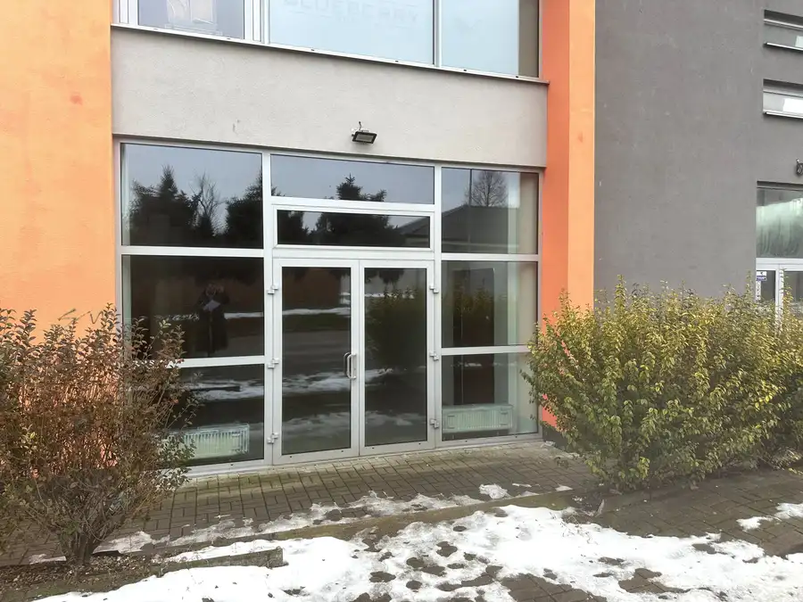
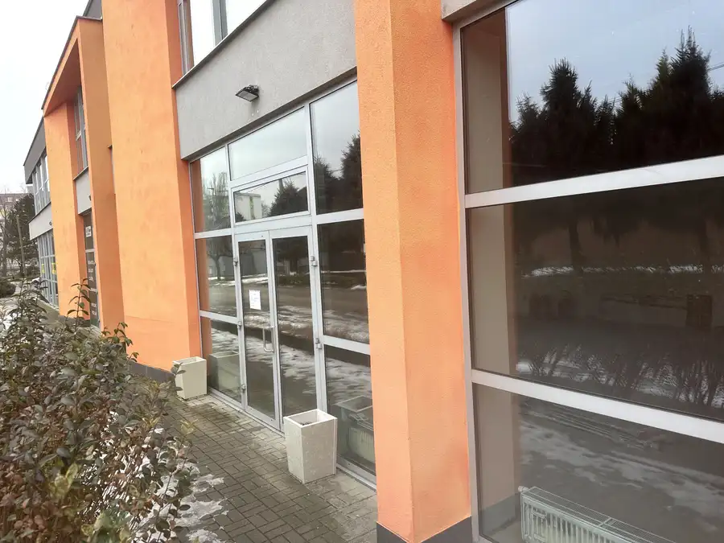
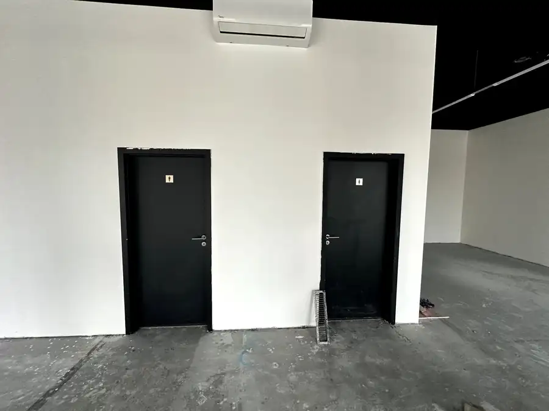
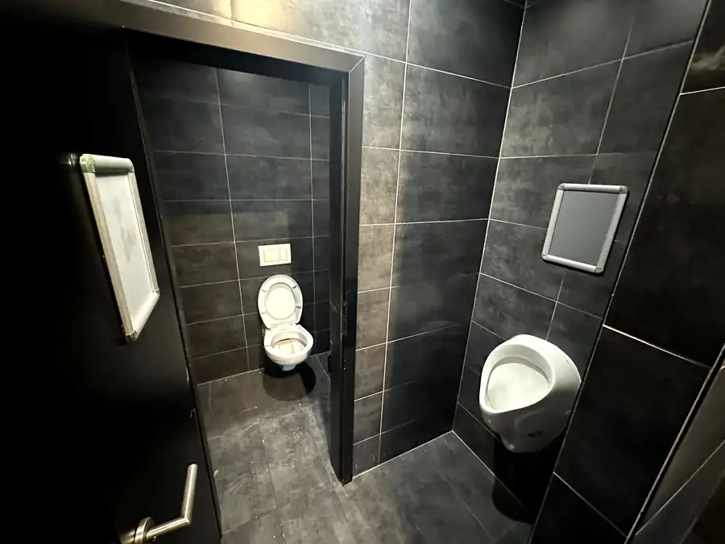
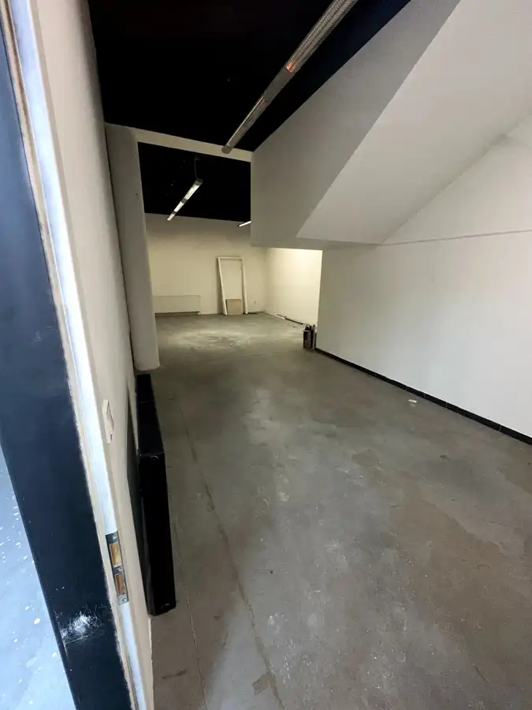
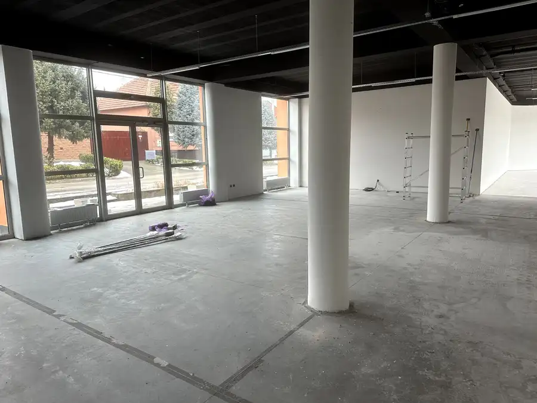
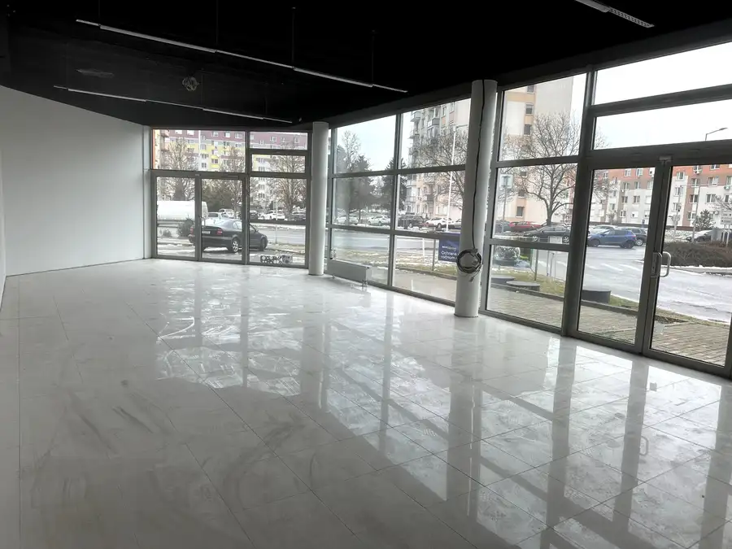

Obchodný priestor 267 m² s billboardmi pri hlavnom ťahu NR – NZ – KN | OC Jiráskova | parkovanie | možnosť rozšírenia | bez provízie
Nové Zámky






- Plocha267 m²
- StavNovostavba
- Energetická triedaA
O nehnuteľnosti
Obchodný priestor 267 m² s billboardmi pri hlavnom ťahu NR – NZ – KN | OC Jiráskova | parkovanie | možnosť rozšírenia | bez províziePonúkame na prenájom veľký obchodný priestor o celkovej výmere 267 m² v obchodnom centre OC Jiráskova, na hlavnom ťahu medzi Nitra a Komárno cez Nové Zámky. Objekt sa nachádza v bezprostrednej blízkosti čerpacej stanice OMV a predajne Lidl, na frekventovanom mieste s výbornou viditeľnosťou z hlavnej cesty.Dispozícia pozostáva z hlavnej otvorenej prevádzkovej plochy o výmere 193 m², samostatného skladového priestoru bez okien o výmere 55 m² a sociálneho zázemia (dámska a pánska toaleta) o výmere 20 m². Priestor je vhodný pre väčšiu predajňu, showroom, služby, prezentačné priestory, ale aj ako ambulancia, zdravotné stredisko alebo iné zdravotnícke zariadenie.V prípade potreby je možné technicky zabezpečiť vybudovanie vzduchotechniky, úpravu dispozície a rozšírenie počtu toaliet podľa požiadaviek nájomcu a platnej legislatívy. Priestor je zároveň možné rozšíriť o ďalšie m² v rámci objektu podľa dohody.K priestoru prislúcha možnosť využitia veľkých reklamných billboardov na stene budovy (cca 5 × 9 m), čo zabezpečuje výraznú viditeľnosť priamo z hlavného ťahu. K dispozícii sú vlastné parkovacie miesta pred objektom. Na poschodí budovy je plánovaná výstavba bytových jednotiek, čo do budúcna zvýši pohyb obyvateľov a klientov v lokalite.Priestor je voľný ihneď. Konečná cena nájmu je dohodou a odvíja sa od prenajatej výmery a dĺžky nájmu. Prenájom je priamo od majiteľa, nie sme realitná kancelária, bez provízie.V prípade záujmu o obhliadku nás kontaktujte na 0905 274 306 alebo e-mailom na mariaklobucnikova@gmail.com.
Parametre
- Druh
- Obchodné priestory
- Dátum zverejnenia
- 12. 02. 2026
- Energetický certifikát budovy
- A
- Počet vonkajších parkovacích miest
- 2
- Rok výstavby
- 2010
- Stav nehnuteľnosti
- Novostavba
- Typ
- Prenájom
- Typ konštrukcie
- Tehlová
- Vybavenie
- Verejné parkovanie, Vonkajšie parkovacie miesto
- Úžitková plocha
- 267 m²
Kde to je


Mohlo by Vás zaujímať

Komerčné priestoryNové Cena na vyžádáníObchodný priestor 129 m² pri hlavnom ťahu NR – NZ – KN | OC Jiráskova | parkovanie | bez provízie Nové Zámky 129 m²
Komerčné priestoryNové Cena na vyžádáníObchodný priestor 118 m² pri hlavnom ťahu NR – NZ – KN | OC Jiráskova | parkovanie | bez provízie Nové Zámky 118 m² Komerčné priestoryNové
Cena na vyžádáníVeľký obchodný priestor 480 m² pri hlavnom ťahu NR – NZ – KN | OC Jiráskova | parkovanie | reklamné plochy | bez provízie
Nové Zámky
480 m²
Komerčné priestoryNové
Cena na vyžádáníVeľký obchodný priestor 480 m² pri hlavnom ťahu NR – NZ – KN | OC Jiráskova | parkovanie | reklamné plochy | bez provízie
Nové Zámky
480 m²